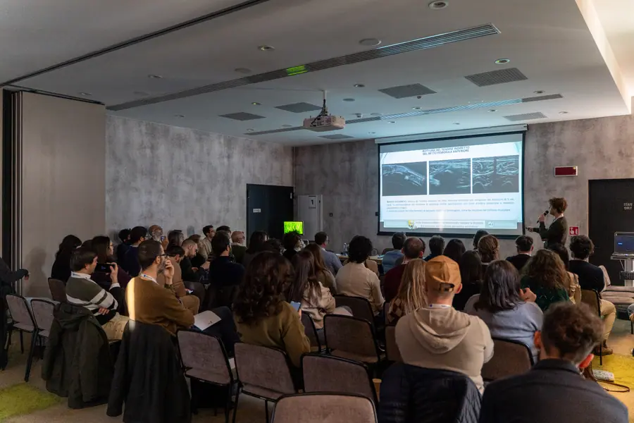
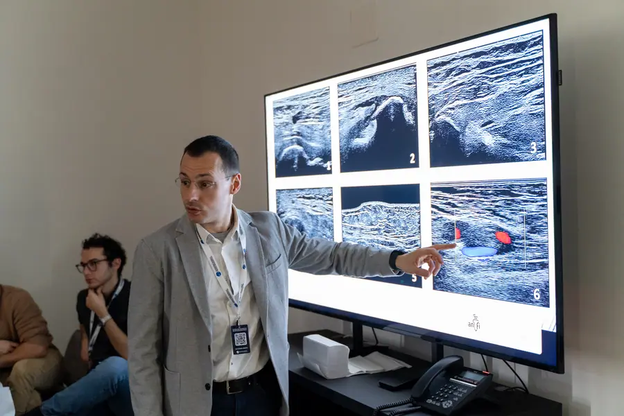
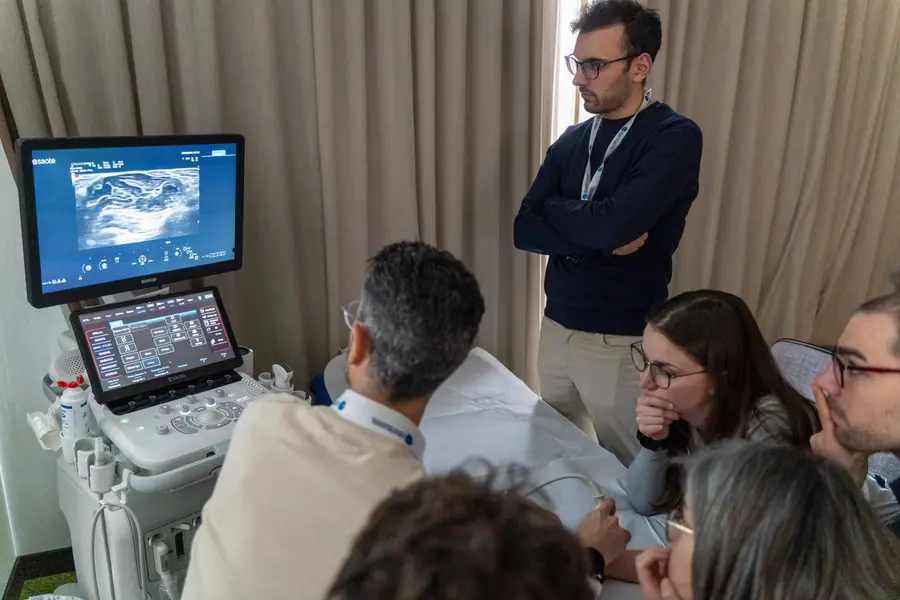
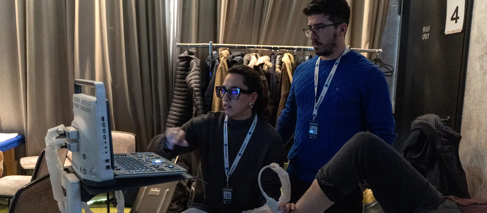
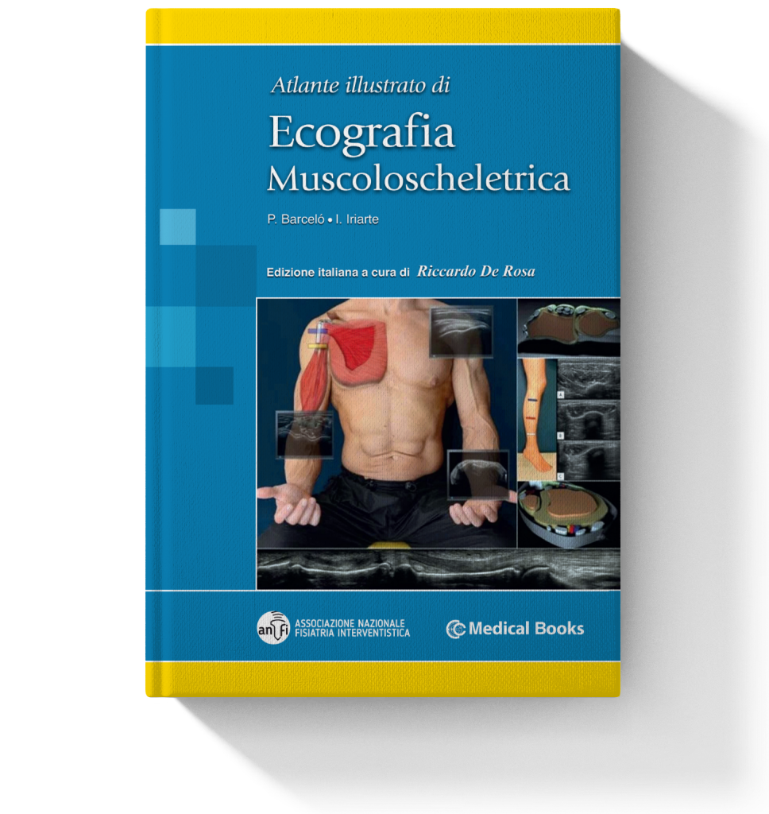

Il razionale della Scuola
Il metodo: ogni scelta ha un perché
Incontri distanziati, argomenti che tornano, quindici minuti di scansione a testa: qui spieghiamo il ragionamento che sta dietro al modo in cui insegniamo l'ecografia muscoloscheletrica.
Spiegazione e prove pratiche
Ogni argomento segue lo stesso schema
Prima capisci, poi guardi come si fa, poi lo fai. Lo stesso ritmo, ripetuto per ogni distretto, così l'attenzione resta sul contenuto e non sull'organizzazione.

La lezione
- Anatomia e riferimenti ecografici del distretto
- Quello che serve per orientarsi alla postazione

La live ecografica
- Il docente esegue la scansione proiettata a schermo
- Si vedono insieme l'immagine, il docente e il paziente in posizione

Le prove pratiche
- Si riproduce subito quello che si è appena visto
- Alla postazione, con il tutor accanto
La parte pratica
L'ecografia si impara con la sonda in mano
La parte pratica non è un complemento della teoria: è il punto in cui la teoria diventa competenza. Per questo il tempo alla postazione è organizzato quanto quello in aula.

15min
Di scansione per ogni discente
Ognuno esegue la scansione con il supporto diretto del tutor. Quando non è il proprio turno osserva il collega: le correzioni del tutor servono a tutto il gruppo.
5
Discenti per ogni tutor
Alla postazione la qualità dipende da chi sta accanto al discente. Per questo i tutor seguono un percorso di affiancamento che li prepara a insegnare con lo stesso metodo.
12
Postazioni ecografiche
Ogni postazione ha il suo tutor e cinque discenti: per questo i posti sono 60. I gruppi lavorano in parallelo, così le prove pratiche non si allungano nell'attesa del turno.
Materiale didattico
Il materiale che forniamo
Il materiale accompagna lo studio tra un incontro e l'altro, e resta come riferimento nella pratica clinica dopo la fine della Scuola.
- Atlante illustrato di ecografia muscoloscheletrica
- Schemi di refertazione ecografica
- Tavole anatomiche muscolari

Feedback
Il metodo visto dai discenti
Valutazione dei partecipanti
5,0 / 5
Eccellente
ANFI per me è il top
L'anno scorso avevo già avuto modo di prendere parte ad un mini corso di ecografia muscolo scheletrica tenuto dal dottor Reggiani durante un Master universitario ed è stata un'esperienza decisamente positiva. La Scuola non poteva essere altrimenti, le mie aspettative sono state attese.
Tra i punti di forza, il clima amichevole, la totale disponibilità (e soprattutto la pazienza!) dei docenti e dei tutor di seguire passo per passo ciascun discente nell'ecografia di tutte le articolazioni trattate durante la parte teorica, le sessioni live perfette.
E non ultima, la chicca dell'atlante di ecografia in omaggio per ciascun discente! ANFI per me è il top.
Puntuale ed efficace
Incontro puntuale ed efficace, che risponde perfettamente alle necessità che incontriamo quotidianamente nella nostra attività clinica ambulatoriale; le lezioni frontali sono precise, di durata adeguata ad affrontare i punti cardine di ogni distretto anatomico, seguite da prove pratiche esaustive con tutor estremamente preparati.
Teoria e pratica intrecciate
Il primo incontro della scuola di Ecografia è stato un'esperienza estremamente positiva. I docenti non si limitano a insegnare, ma riescono davvero a ispirare e a motivare, trasmettendo con passione il loro sapere.
Un aspetto che ho trovato particolarmente utile è stato il modo in cui teoria e pratica sono stati intrecciati: dopo ogni lezione teorica, le live di ecografia proiettate a schermo hanno reso tutto immediatamente chiaro e applicabile. Vedere non solo l'immagine ecografica, ma anche il docente ed il paziente in posizione, è stato un valore aggiunto che ha permesso di cogliere anche i dettagli più pratici. Un'esperienza che non solo forma, ma stimola davvero a dare il massimo. Non vedo l'ora di continuare questo percorso!
Tanta pratica, organizzazione eccellente
Esposizioni chiare e concise. Tanta pratica, attenzione e disponibilità nei confronti del corsista. Organizzazione eccellente.
Tempi svizzeri e tutor attenti
Un corso già ottimo alla sua prima edizione, fatto da colleghi fisiatri per colleghi fisiatri, con ben chiare le esigenze di chi si approccia alla materia con l'esigenza di portare l'ultrasonografia nella pratica clinica e riabilitativa di tutti i giorni.
Docenti preparati e appassionati, che trasmettono concetti chiari e portano la loro esperienza quotidiana per dare quel qualcosa in più che fa la differenza. Tempi "svizzeri" ben scanditi, con un rapporto teoria-pratica giustamente a favore dell'approccio pratico sugli strumenti, con tutor attenti e disponibili. Strumentazione di prim'ordine, con anche una attenzione a chi, essendo al primo approccio, non avrà da subito a disposizione il top di gamma e quindi deve imparare a gestire anche macchine "meno performanti".
Consigliato a chi è al primo approccio, ma anche a chi ha già qualche esperienza di ultrasonografia ma vuole acquisire un metodo ed una forma mentis rigorosi e improntati all'ambito riabilitativo.